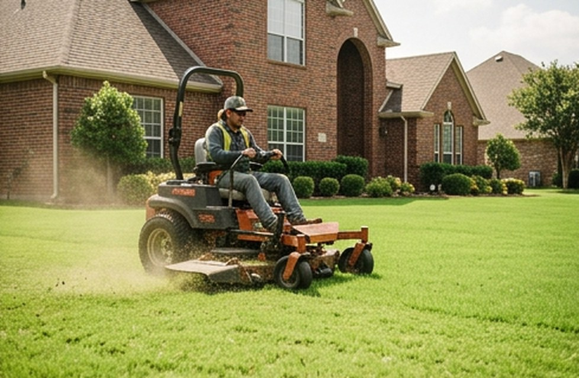
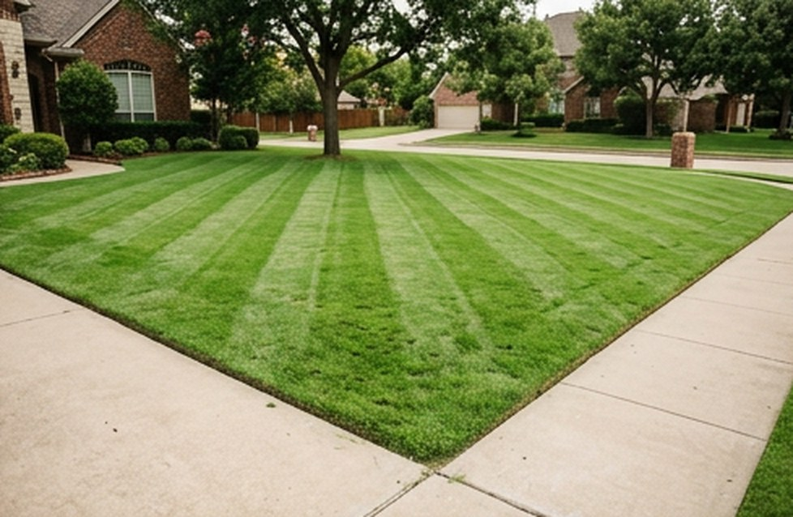
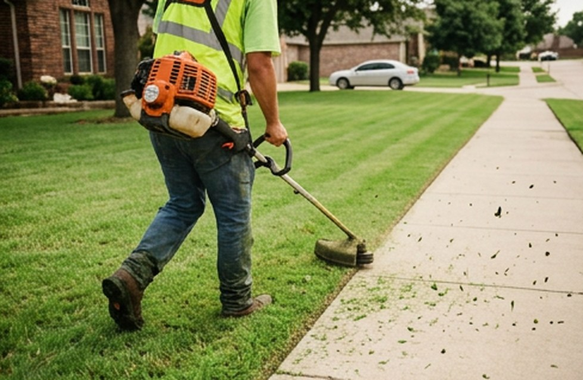

Built for the heavy blackland clay soil and long, hot growing season of North Central Texas. Every service is finished with a blow-off of drives, walks and patios, and every job is looked at in person before we quote it.

Grass Cutting & Mowing
We mow Bermuda, St. Augustine, Zoysia and native turf at the right height for each grass type and season, never removing more than a third of the blade at once. Sharp, balanced blades give a clean cut that resists disease and browning in the Texas heat.
Weekly, bi-weekly or one-time cuts
Zero-turn mowers for large lots and acreage
Push mowers for tight backyards and gated areas
Mowing pattern rotated each visit to prevent ruts
Grass Bagging & Haul-Off
Prefer a spotless finish? We collect every clipping instead of mulching it back into the lawn. Bagging is recommended for overgrown lawns, the first spring cut, properties with pools, and lawns fighting fungus or weeds going to seed.
Clippings bagged and hauled away, or left curbside on request
Ideal for HOA-ready and event-ready yards
Reduces thatch and tracked-in debris

Lawn Striping
Get the ballpark look at home. Our mowers carry striping rollers that bend the grass blades in alternating directions, so sunlight reflects off them as bold light and dark bands.
Straight stripes, checkerboard or diagonal patterns
Works best on Bermuda, Zoysia and Rye
Perfect for curb appeal, home sales and special occasions

Edging & Trimming
Crisp edges are what make a lawn look professionally kept. We use stick edgers for sharp vertical lines along concrete and string trimmers around everything a mower can't reach.
Sidewalk, driveway and curb edging
Bed edging to keep grass out of flower beds
Trimming around fences, trees, mailboxes and AC units
Gardening & Flower Bed Care
We keep beds healthy and tidy all year: planting heat-tolerant Texas favourites, pulling weeds, and laying fresh mulch and lawn fabric that hold moisture through the summer.
Seasonal flower and shrub planting
Weeding and bed clean-outs
Mulch and lawn fabric installation
Shrub and hedge trimming
Brush Hogging, Cleanups & Extra Services
Overgrown acreage is its own job, not a mowing job. Old hay fields, former cow pastures, and land gone wild get cut with a brush hog, which knocks down heavy growth fast and leaves a rough, working finish rather than a manicured lawn.
Brush hogging of hay fields, pastures and overgrown lots
Chain saw work for downed limbs and saplings
Leaf removal and seasonal cleanups
Weed control and fertilization
Aeration for compacted clay soil
Move-in / move-out and rental property service
Pricing
Priced by the type of property as much as the size of it. A rough acre and a showcase acre are not the same job, so the tables below set the starting point and the on-site visit sets the final number.
Residential Lawn Mowing & Yard Service
Lot Size
Basic Cut
Full Service
Showcase
Up to 1/4 acre
$45
$55
$70
1/4 to 1/2 acre
$55
$60
$80
1/2 to 1 acre
$75
$100
$140
1 to 2 acres
$150
$200
$300
2 to 5 acres
$350
$500
$750
Over 5 acres
Quoted on site
Quoted on site
Quoted on site
Basic Cut — mowing plus a blow-off of drives, walks and patios. Full Service — Basic Cut plus edging and trimming. Showcase — Full Service plus bagging, haul-off and lawn striping. Showcase rates are for landscaped properties that need detail work and extra time, not just more grass. Prices are per visit.
Property Type Sets the Rate
Two properties of the same acreage can be very different jobs. These are the tiers we price from, and the walk-around tells us which one you are.
Rough acreage — brush hog work. Lowest cost per acre.
Old hay fields, former cow pastures, fallow ground and overgrown rural lots. Cut with a rotary brush hog to knock the growth down. Finish is rougher and more uneven by design, no bagging, no edging, no striping. Priced lowest per acre because it is fast, wide-open work.
Pasture maintained on a schedule — stays workable.
Land that was rough once and is now cut regularly. Still brush hog or heavy mower work, but the grass is manageable and the job is quick. Priced between rough acreage and a residential lawn.
Large residential or landscaped property — highest cost per acre.
Two acres around a well-kept house is far more work than two acres of field: bed lines, trees and shrubs to trim around, hard surfaces to blow off, a finish that has to look right, and equipment that has to fit through the gate. Priced highest per acre.
Property Conditions That Change the Price
Grass height. Anything over 8 inches, or gone to seed, takes extra passes.
Downed branches and storm debris. Chain saw and haul-off time, not mower time.
Heavy tree cover. Usually a quick, easy mow because the grass is thin — but it can turn into one of the hardest jobs on the list if limbs are down, the ground is low and soft, or there is brush underneath to clear first.
Slope and ditches. Steep banks and drainage cut slower and need different equipment.
Gate and access. If a wide mower cannot fit through, it gets push-mowed, and that costs more.
Fences, posts, poles and equipment. Every obstacle is trim time rather than mow time.
Soft or wet ground. Rutting risk, so we may need to wait or use lighter equipment.
Beds, mulch and clean-out work. Priced separately from mowing, never included in an acreage rate.
None of this is a way to run up a bill. It is simply why we look at the property before naming a price, and why our quotes are firm once given.
Per Acre Rates
Service
Price Per Acre
Minimum Charge
Brush Hogging — rough acreage, rough finish
$90 / acre
$100
Brush Hogging — heavy growth, saplings and brush
$125+ / acre
$125
Pasture mowing — maintained ground
$60 / acre
$60
Grass Bagging & Haul-Off (add-on)
+$30 / acre
$15
Striping (add-on)
+$20 / acre
$10
Edging & Trimming
$25 / acre
$15
Leaf Removal / Cleanup
$150 / acre
$75
Fertilization & Weed Control
$90 / acre
$50
Aeration
$175 / acre
$85
Mulch & Flower Beds — Quoted Separately, Not Included
Mulch work and flower bed redo are not included in any mowing package or per-acre rate. They are priced on their own after we measure the beds. Mulch and lawn fabric are priced by the square foot of bed area.
Work
Price
Notes
Mulch installed
$0.50 / sq ft
Mulch and labour, spread by us
Lawn fabric installed
$1.00 / sq ft
Weed barrier under mulch, includes material
Mulch over new lawn fabric
$1.50 / sq ft
Fabric first, then mulch on top, priced together
Flower bed redo — weeding and clean-out
$50 / hour
Beds cleared and edged, materials extra
Flower bed redo — full refresh
$50 / hour + materials
Clean-out, new soil, new plants, fresh mulch
Bed materials — plants, soil, rock
At cost
Billed at what we pay, receipts on request
Shrub and hedge trimming
$50 / hour
Includes haul-off of trimmings
How much is a square foot? A typical 3 ft by 20 ft bed strip is 60 square feet, a 20 ft by 40 ft bed is 800 square feet, and a 100 ft by 2 ft strip along a house is 200 square feet. We measure every bed during your on-site visit and price from the real numbers.
Every quote is hand evaluated before you get a price.
The prices on this page are our starting rates, and no two properties are the same. Before we confirm any job, we come out and look at it: the size and condition of the grass, what kind of property it is, the slope, the gate width, tree cover, how much brush or downed wood there is, the number of beds and their square footage, and how much mulch you want. After that walk-around, we give you a firm price in writing. Nothing is booked or charged until you have that number and say yes.
Call or text 469-412-6219 to set up your free on-site evaluation.
Basic Cut
$45 and up
Mowing
Blow-off of hard surfaces
Good for small, tidy yards
Full Service ★ Most Popular
$55 and up
Mowing
Edging & trimming
Blow-off
Best value for most homes
Showcase
$70 and up
Everything in Full Service
Bagging & haul-off
Striping
For landscaped and detail work
Quick Price Estimator
This gives you a ballpark from the tables above. Every job is hand evaluated on site before a price is confirmed.
Our Work
A look at the results Blackland Lawn Care delivers across Waxahachie.
Why Blackland?
Local to WaxahachieWe know Ellis County clay, heat and drought rules.
Reliable ScheduleSame day each week, with a text before we arrive.
Right EquipmentZero-turns, push mowers and a brush hog for rough ground.
No ContractsFree on-site quotes, and service you can cancel anytime.
Get Your Free Quote
Call, text or email us and we'll come out to look at the property. Every quote is hand evaluated on site before a price is confirmed.